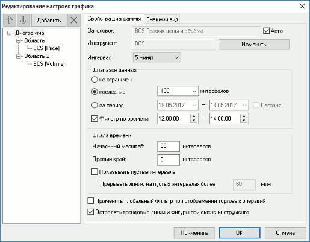
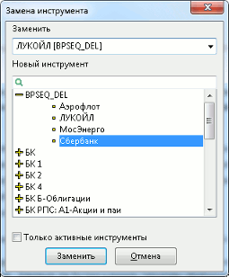
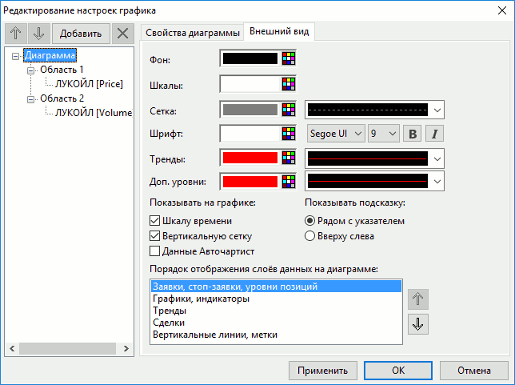

Настройка свойств диаграммы
На странице «Диаграмма» выполняется настройка общих параметров диаграммы.
Вкладка «Свойства диаграммы»

- «Заголовок» – заголовок диаграммы.
- «Авто» – если флажок установлен, то заголовок присваивается автоматически и недоступен для редактирования.
- Если включен режим связанных окон, то при смене инструмента значение поля изменяется автоматически.
- «Инструмент» – название инструмента, по которому построен график. Если на диаграмме построены графики по разным инструментам, то значение поля: «Несколько инструментов».
- «Изменить» – изменить инструмент, к которому относятся кривые на графике. Диалог замены инструмента содержит следующие поля:

- «Заменить» – инструмент (или список инструментов), выбранный источником данных в диаграмме. Если инструментов больше одного, то по умолчанию выбран инструмент, являющийся источником для наибольшего количества графиков на диаграмме. При отсутствии приоритета по количеству графиков инструменты сортируются по алфавиту.
- «Новый инструмент» – список инструментов, сгруппированный по классам.
- Признак «Только активные инструменты» позволяет исключить из списка бумаги или контракты, не имеющие заявок, сделок или открытых позиций. Под активными инструментами понимаются такие инструменты, по которым на Бирже в текущую торговую сессию присутствовали либо присутствуют заявки, сделки или открытые позиции (для фьючерсов). Рабочее место QUIK определяет данный факт по значению параметров таблицы Текущих торгов: «Лучшая цена спроса», «Лучшая цена предложения», «Количество сделок», «Количество открытых позиций».
- Если список получаемых параметров задан вручную, и в него не входят параметры, указанные выше, то признак «Только активные инструменты» работает некорректно.
- «Интервал» – устанавливает промежутки времени, через которые откладываются новые отрезки на диаграмме. При выборе значения «Тиковый» создается тиковый график. Величина интервала отображается в квадратных скобках справа от заголовка окна диаграммы и отделяется от заголовка знаком «-».
- «Диапазон данных» – диапазон отображаемых значений:
- «не ограничен» – показать значения за весь доступный период времени;
- «последние ... интервалов» – отображать на графике указанное количество интервалов. Данные за более ранние периоды времени удаляются из области построения. Рекомендуется для наблюдения за краткосрочной динамикой изменения параметра;
- «за период ... – ...» – установить для диаграммы указанный интервал дат;
- «Сегодня» – при установленном флажке отображаются данные за текущий день;
- «Фильтр по времени ... – ...» – при установленном флажке отображаются данные за указанный интервал времени.
- «Шкала времени»:
- «Начальный масштаб: … интервалов» – минимально допустимое количество интервалов на графике. Параметр имеет значение в начале торговой сессии для предотвращения растягивания интервалов во всю ширину области построения.
- «Правый край … интервалов» – количество пустых интервалов на графике, добавляемых справа. Используется для продления линий трендов на будущие периоды.
- «Показывать пустые интервалы» – если флажок включен, то на шкале времени отображаются все интервалы времени; если флажок выключен, то отображаются только интервалы, содержащие сделки. По умолчанию флажок снят.
- «Прерывать линию на пустых интервалах более … мин» – не рисовать линию при построении графика типов «Линии» или «Пунктир», если последовательность пустых интервалов больше указанной величины. Параметр доступен для заполнения при включенном флажке «Показывать пустые интервалы».
- «Применять глобальный фильтр при отображении торговых операций» – признак отображения заявок и сделок на графике в соответствии с общими фильтрами.
Если в общем фильтре выбран только один код клиента, то при установленном признаке «Применять глобальный фильтр при отображении торговых операций» автоматически заполняется поле «Код клиента» на форме ввода заявки, открытой из окна графика (см. Ввод заявок из окна графика).
- «Оставлять трендовые линии и фигуры при смене инструмента» – признак отображения трендовых линий и фигур на графике после смены инструмента. По умолчанию флажок включен.
При нажатии кнопки «Применить» данные на диаграмме обновляются в соответствии с изменением настроек. Кнопка «ОК» закрывает окно редактирования графика с сохранением изменений, кнопка «Отмена» – без сохранения изменений.
Вкладка «Внешний вид»

Настройки позволяют задать цвета для элементов диаграммы (фона, осей, сетки, шрифтов, цвет и толщину линий трендов). Правила настройки цвета описаны в п. Настройка цвета в таблицах и графиках.
Дополнительные параметры:
- «Показывать на графике» – настройка отображения элементов графика:
- «Шкалу времени» – показывать значения на шкале времени (горизонтальная ось);
- «Вертикальную сетку» – показывать вертикальные линии сетки на области построения;
- «Данные Авточартист» – показывать данные Авточартист (описание работы с данными Авточартист см. в Руководстве пользователя «Программный интерфейс системы Autochartist»).
- «Показывать подсказку» – выбор способа отображения параметров выбранной свечи:
- «Рядом с указателем» – при наведении курсора на свечу отображается всплывающая подсказка рядом с ней;
- «Вверху слева» – параметры отображаются в верхнем левом углу диаграммы.
- «Порядок отображения слоев данных на диаграмме» – в окне настраивается порядок отображения слоев диаграммы. Для изменения порядка отображения слоев используйте стрелки «вверх» и «вниз». При этом самый верхний слой в списке является нижним слоем на диаграмме.
При нажатии кнопки «Применить» данные на диаграмме обновляются в соответствии с изменением настроек. Кнопка «ОК» закрывает окно редактирования графика с сохранением изменений, кнопка «Отмена» – без сохранения изменений.
См. также: